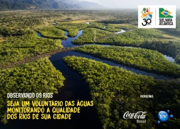

O Instituto OndAzul é uma organização não governamental brasileira que desempenha importante papel na área ambiental, se dedicando à defesa do meio ambiente e à promoção do desenvolvimento sustentável e do bem-estar social.
Foi criado no Rio de Janeiro, em 2006, como uma franquia da Fundação OndAzul, fundada por Gilberto Gil e Alfredo Sirkis, na Bahia. Com a filosofia de ações mais abrangentes, ampliou sua capacidade de atuação em projetos socioambientais de recuperação de áreas degradadas, campanhas de mobilização social e educação ambiental.
Entre as suas principais competências, estão a articulação com setor público e privado, da sociedade nacional e internacional e a excelência na gestão de projetos, cumprindo prazos e metas com eficiência, eficácia e efetividade.
A missão do OndAzul é promover o desenvolvimento sustentável através do diálogo permanente com os diversos setores da sociedade, da multiplicação de competência e da promoção do exercício da cidadania.
Atuação
Em 2012 o OndAzul conseguiu articular a transformação do mangue na Unidade de Conservação Parque Natural Municipal Barão de Mauá, por meio de decreto municipal, devido a uma parceria entre a Secretaria de Meio Ambiente de Magé e o INEA/SEA.
Em 2017, foi dada a largada para a criação do Parque Ecoturístico, nas áreas recuperadas.
Protetores dos parques
- Teresópolis – Parque Estadual dos Três Picos – 2 núcleos.
- Trajano de Moraes – Parque Estadual do Desengano – 1 núcleo
- Santa Maria Madalena – Parque Estadual do Desengano – 1 núcleo
- São João da Barra – Parque Estadual da Lagoa do Açú – 4 núcleos
SOS Mata Atlântica
Na década de 1980, cientistas, empresários, jornalistas e defensores da questão ambiental se aproximam e lançam as bases para a criação da primeira ONG destinada a defender os últimos remanescentes de Mata Atlântica no país, a Fundação SOS Mata Atlântica. O ideal de conservação ambiental da entidade, criada em 20 de setembro de 1986, associa-se ao objetivo de profissionalizar pessoas e partir para a geração de conhecimento sobre o bioma. A proposta representa também um passo adiante no amadurecimento do movimento ambientalista no país.
A história da Fundação SOS Mata Atlântica foi construída através da mobilização permanente e da aposta no conhecimento, na educação, na tecnologia, nas políticas públicas e na articulação em rede para consolidação do movimento socioambiental brasileiro.
Confira a linha do tempo com os momentos que marcaram a história da Fundação SOS Mata Atlântica, suas lutas e principais conquistas
986 - Criação da Fundação SOS Mata Atlântica.
1987 - Lançamento da Campanha “Estão Tirando o Verde da Nossa Terra”, que se tornou uma das marcas do movimento ambientalista no Brasil.
1988 – Promulgação da Constituição Federal, onde a Mata Atlântica é reconhecida como um “patrimônio nacional”. Fundação inicia projetos na região do Lagamar, maior área contínua de Mata Atlântica no país.
1989 - Lançamento da primeira Plataforma Ambiental aos candidatos à Presidência.
1990 – Publicação do Primeiro Atlas da Mata Atlântica em parceira com o Inpe e o Ibama, com patrocínio do Bradesco Cartões. Edição do Decreto Federal 99.547, que veta o corte e a exploração da vegetação de Mata Atlântica. Criação do Fórum de Ongs Brasileiras preparatório para a ECO-92.
1991 - Implantação da Reserva da Biosfera da Mata Atlântica em vários estados brasileiros. Lançamento da Campanha pela Despoluição do Tietê, que originou o Núcleo União Pro – Tietê e a Rede das Águas. Lançamento do Plano de Ação para a Mata Atlântica, de Ibsen de Gusmão Câmara, com propostas para atender às principais necessidades de conservação do bioma.
1992 – Lançamento do Atlas na ECO-92. O Conselho Nacional do Meio Ambiente aprova o conceito Domínio Mata Atlântica, estendendo a proteção à vegetação em regeneração. SOS Mata Atlântica participa da Eco-92. Criação da Rede de ONGs da Mata Atlântica.
1993 – O presidente Itamar Franco edita o decreto 750 que estabelece normas para a proteção e uso sustentável da Mata Atlântica. SOS Mata Atlântica lança o cartão de crédito SOS Mata Atlântica Bradesco Visa, principal mecanismo de filiação à ONG.
1994 – Doação do primeiro viveiro de mudas nativas para a Escola Agrícola de Iguape (SP).
1995 – Lançamento da Campanha “Traga seus amigos para a SOS Mata Atlântica”. Fundação promove Seminário Imprensa e Meio Ambiente.
1996 – Criação do Polo Ecoturístico do Lagamar. Lançamento da “Campanha Respira São Paulo”, contra a poluição do ar na cidade.
1997 – Primeira regulamentação de restinga no Estado de São Paulo. Lançamento do Programa de Voluntariado da SOS Mata Atlântica para capacitação, militância e mobilização.
1998 – Prêmio Muriqui é concedido à SOS Mata Atlântica pelo Conselho Nacional da Reserva da Biosfera da Mata Atlântica.
1999 – Criação da Aliança para a Conservação da Mata Atlântica em parceria com a Conservação Internacional (CI-Brasil). Premiação do Polo Ecoturístico do Lagamar pela Revista americana Condê Nast Traveler como melhor projeto de planejamento de destino ecoturístico. Ocupação do Congresso Nacional por 250 crianças com desenhos e mensagens em favor da Mata Atlântica, após campanha que percorreu 13 capitais.
2000 – Lançamento do Prêmio de Reportagem sobre a Mata Atlântica. Criação do Programa Clickarvore. Elaboração da primeira Plataforma Ambiental aos Municípios, Prefeitos e Vereadores. Realização do inventário dos recursos florestais da Mata Atlântica com participação da Fundação.
2001 – Lançamento do Programa Plantando Cidadania de capacitação para voluntariado empresarial e escolar. Lançamento da campanha “Faça as Leis com suas Próprias Mãos – Assine pela Mata Atlântica”, pela aprovação do Projeto de Lei da Mata Atlântica, em parceria com a Rede de ONGs da Mata Atlântica.
2002 – Criação do Programa de Incentivo às Reservas Particulares do Patrimônio Natural (RPPNs) da Mata Atlântica. Criação da União pela Fauna da Mata Atlântica, em parceria com a Rede Nacional de Combate ao Tráfico de Animais Silvestres. Lançamento da “Campanha Mata Atlântica: Vote para Proteger”envolvendo eleitores com a proposta de inclusão da temática ambiental na escolha dos candidatos.”
2003 – Aprovação da Lei da Mata Atlântica. Lançamento do Atlas dos Municípios da Mata Atlântica.
2004 – Criação do Programa Florestas do Futuro. Implementação do Observatório Parlamentar da Mata Atlântica. Lançamento do título de capitalização Pé Quente Bradesco-SOS Mata Atlântica.
2005 – Realização da primeira edição do evento “Viva a Mata”, no Parque do Ibirapuera em São Paulo.
2006 – Sanção da Lei da Mata Atlântica depois de 14 anos de tramitação. Criação do Programa Costa Atlântica.
2007 – Lançamento do Fundo Costa Atlântica para apoio às atividades das áreas protegidas marinhas. Criação da Frente Parlamentar Ambientalista. Implantação do Centro de Experimentos Florestais SOS Mata Atlântica – Brasil Kirin. Criação do Programa “Mata Atlântica vai à Escola”.
2008 – Inauguração dos Viveiros Comunitários SOS Mata Atlântica Piracicaba (SP) e Campinas (SP). Lançamento da Aliança para Conservação Marinha em parceria com a CI-Brasil.
2009 – Lançamento do Projeto “A Mata Atlântica é Aqui”. Campanha “Xixi no Banho” é lançada e conquista milhares de simpatizantes no Brasil e no mundo. Lançamento do Programa “Mata Atlântica & Pesca: Diagnóstico e Ordenamento Participativo da Pesca Amadora” no Complexo do Lagamar.
2010 – Publicação do “Plantando Cidadania”, guia do educador ambiental. Realização de diversas manifestações no Brasil contra as alterações no Código Florestal. Lançamento da rede social Conexão Mata Atlântica. Lançamento da Campanha “Vá de Galinha”. No dia Dia do Tietê (22 de setembro), a Rede das Águas da SOS Mata Atlântica promove o evento “Praia do Tietê” a fim de chamar atenção da sociedade para a importância do rio e de sua despoluição.
2011 – Lançamento da Campanha Meu Ar, Minha Água, Minha Árvore, Meu Ambiente, Mata Atlântica. Exposição interativa “Sua Mata, Sua Casa” celebra 25 anos da Fundação.
2012 – Lançamento das campanhas “Mangue Faz a Diferença” e Veteranas de Guerra. Fundação é vencedora do Prêmio Greenbest, na categoria ONG. Lançamento da publicação “25 Anos de Mobilização”. Novo Código Florestal é aprovado.
2013 - Pedro Passos assume a presidência da Fundação depois de 22 anos da gestão de Roberto Klabin. Fundação passa a atuar com três frentes: Florestas, Mar e Cidades. Lançamento do jogo 3D SOS Mata Atlântica para Facebook e smartphones. Criação do Fundo Juatinga-Cairuçu. Lançamento da Campanha “Que se Dane”, de reflexão sobre engajamento ambiental. Foi realizado workshop para contribuir na elaboração de um anteprojeto da Lei do Mar.cartilha lei mar
2014 - Fundação promove diversas ações para enfrentamento da crise hídrica, como o seminário e bate-papo online sobre o Rio Tietê como alternativa de água para São Paulo; a parceria com a Aliança pela Água; o edital para plantar 1 milhão de mudas no Cantareira. Lançamento da Carta aos Candidatos e da campanha #SOSParquesdoBrasil. Lançamento da cartilha “Uma Lei para o Mar: Uso e Conservação para Benefício de Todos”. Mobilização “Sem florestas, não há água”.
Cristo Verde - Marcos Hermes_SOS Mata Atlantica2015 – SOS Mata Atlântica celebra 15 anos de Restauração Florestal. Lançamento do edital que destina R$ 1 milhão para unidades de conservação municipais. Lançamento do hotsite interativo Aqui Tem Mata? Lançamento da campanha e websérie “Espécies da Mata Atlântica”, com histórias reais de engajamento. 1º Viva a Mata itinerante é realizado no Rio de Janeiro. Encontro inédito reúne secretários de estados da Mata Atlântica e gera a carta “Uma Nova História para a Mata Atlântica”. Fundação realiza expedição pelo Rio Doce após tragédia com a barragem de dejetos em Mariana (MG). Fundação marca presença na COP-21, onde foi assinado o o Acordo de Paris para limitar o aquecimento global.
2016 – SOS Mata Atlântica celebra 30 anos e renova missão institucional: “Inspirar a Sociedade na Defesa da Mata Atlântica”. Lançamento da campanha Saneamento Já. Compromisso pelo desmatamento ilegal zero ganha apoio dos 17 Estados da Mata Atlântica. Lançamento da publicação “25 Anos de Mobilização: O retrato da qualidade da água e a evolução dos indicadores de impacto do Projeto Tietê” . Fundação fecha parceria inédita com o Fluminense para uma floresta tricolor e outras ações. Fundação lança sua campanha de 30 anos: A Mata é a Nossa Casa.
ONG Florescer
A Florescer realiza atividades de reflorestamento e Educação Ambiental no Morro São João, em Botafogo, no Rio de Janeiro. Um trabalho que envolve a manutenção da área reflorestada pela ONG nos últimos anos, e também Educação Ambiental, através de oficinas e encontros ecológicos. Como suporte para as atividades a Florescer conta com um espaço onde mantém um viveiro de mudas, canteiros de horta e trilhas ecológicas.
Morros São João e Babilônia
Esse espaço faz farte do Parque Natural Municipal Paisagem Carioca, em grande parte reflorestado pela Prefeitura do Rio através da Cooperativa de Trabalhadores da Babilônia, sob orientação de um Conselho Gestor que atua no local. Fazem parte do conselho: SMAC, CEP/FDC, ALMA, PE Chacrinha, COOPBAB, GAE, Rio Sul, e AMA-Babilônia. A gestão do Parque Paisagem Carioca é de Marcelo Barros.